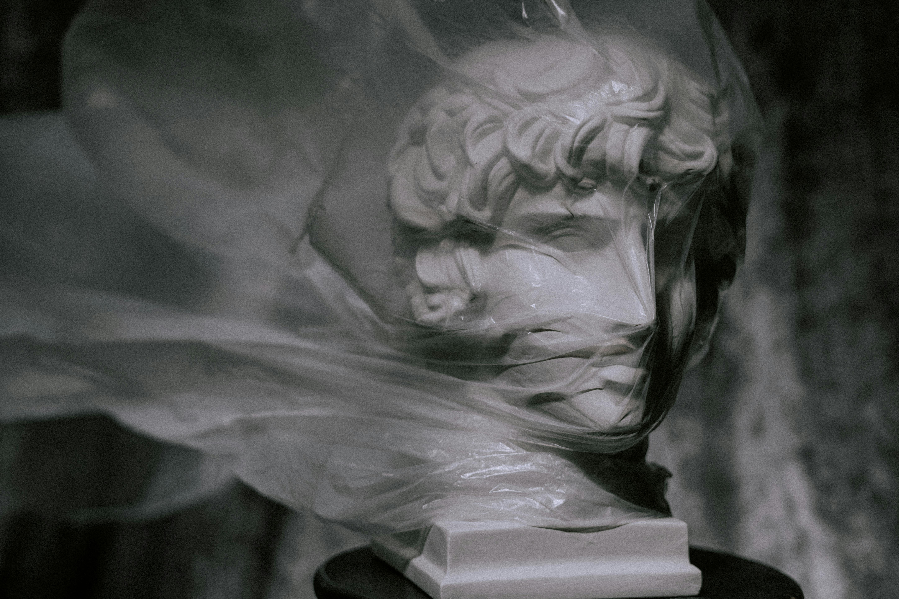
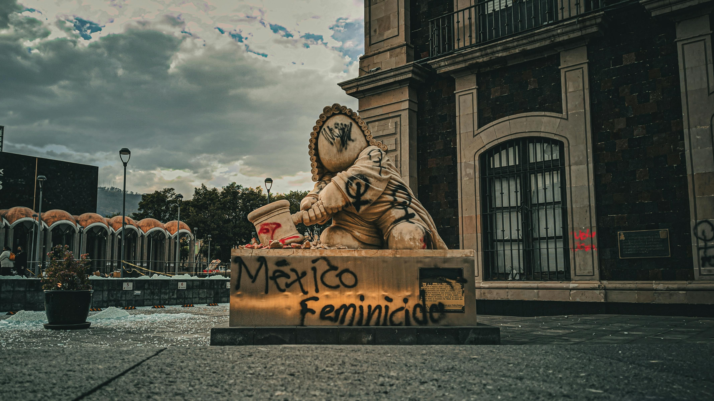
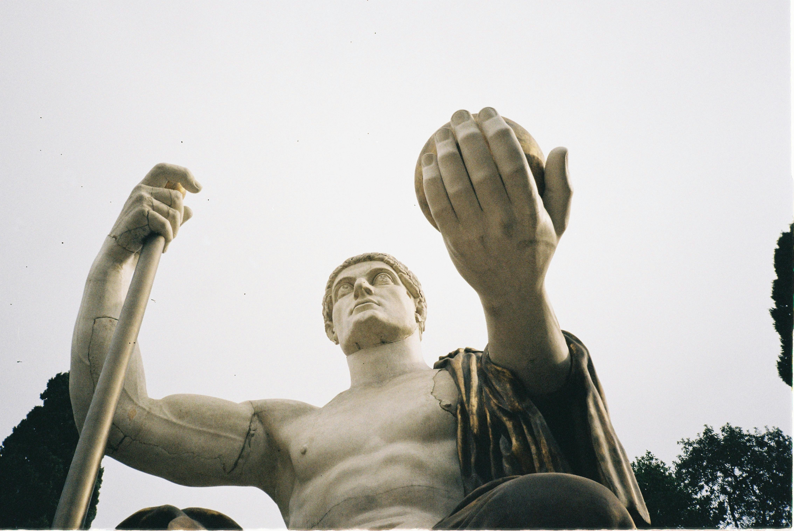
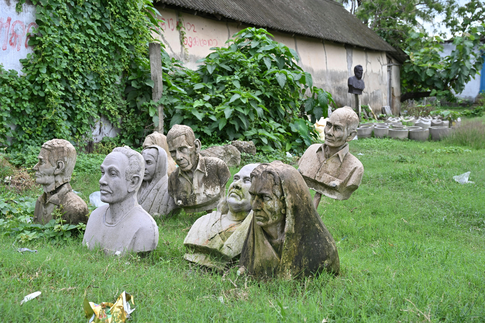
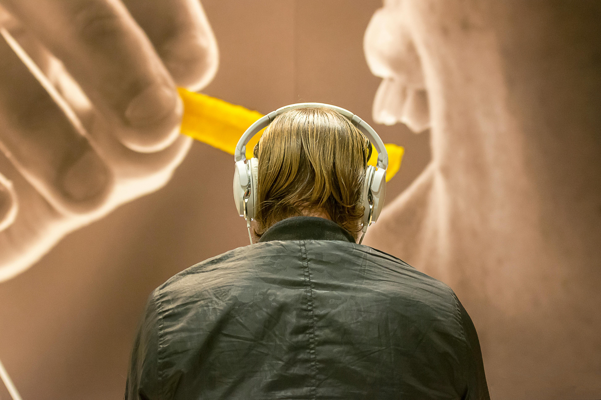
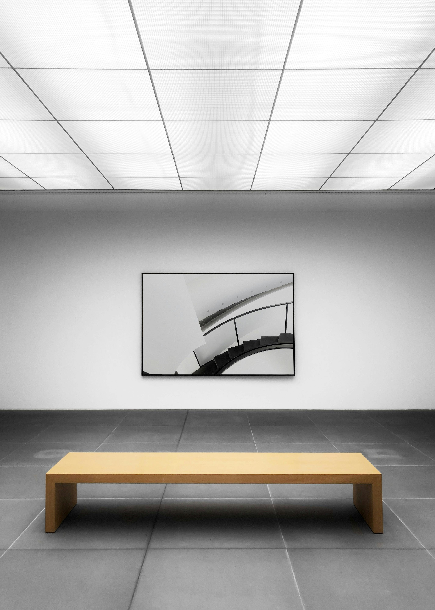

Unidad 2: Problemáticas sociales y escultura

En esta unidad vas a trabajar la escultura como una forma de decir algo sobre el mundo que te rodea. No se trata solo de crear una pieza bonita, sino de pensar qué quieres comunicar y por qué. A través de distintos materiales, técnicas y formas, desarrollarás proyectos que se conectan con problemáticas sociales actuales, entendiendo que el arte puede incomodar, abrir conversaciones y dejar preguntas dando vueltas.
La escultura aquí se mira como una herramienta para observar la realidad, analizarla y cuestionarla. A veces una obra no entrega respuestas claras, y eso también tiene valor.
¿De qué trata esta unidad?

La propuesta es explorar cómo la escultura ha sido usada, y sigue siendo usada, para hablar de conflictos, tensiones y temas que afectan a personas y comunidades. Muchas obras contemporáneas abordan situaciones reales como la desigualdad, la violencia o el cuidado del entorno, invitando a quien las observa a detenerse y pensar.
¿Puede una escultura hacerte reflexionar sobre algo que pasa todos los días? Esa es una de las preguntas que atraviesan la unidad.
Escultura y sociedad

Desde hace mucho tiempo, la escultura ha servido para expresar ideas, creencias y valores de una época. Hoy, muchos artistas la usan para visibilizar injusticias, mostrar realidades que suelen ignorarse o generar conciencia social.
En esta unidad analizarás cómo elementos como la forma, el material, el tamaño o el lugar donde se instala una obra influyen en el mensaje que transmite. No es lo mismo una escultura pequeña en una sala que una intervención en el espacio público. Todo comunica algo
Problemáticas sociales que se trabajarán

Durante la unidad podrás abordar temas como:
- Desigualdad social
- Discriminación y exclusión
- Medioambiente y contaminación
- Memoria y derechos humanos
- Violencia y convivencia
- Identidad cultural
- Comunidad y espacio público
Son temas complejos y sensibles. No siempre es fácil hablar de ellos, y menos representarlos visualmente. Justamente por eso se trabajarán desde el respeto, la reflexión y distintas miradas.
Manifestaciones visuales y escultóricas

Analizarás diferentes formas de escultura, entre ellas:
- Escultura tradicional
- Escultura contemporánea
- Instalaciones artísticas
- Arte urbano
- Escultura con materiales reciclados
Este recorrido permitirá ver cómo el arte cambia según el contexto social y cultural, y cómo los materiales y las técnicas también dicen algo sobre la problemática que se aborda
Desarrollo de proyectos escultóricos
El centro de la unidad es la creación de un proyecto escultórico. Podrás trabajar de forma individual o en grupo, siguiendo un proceso que incluye observar el entorno, investigar, reflexionar, diseñar y construir.
Se pondrá atención en la relación entre la idea, el material elegido y el mensaje que se quiere transmitir. No se espera perfección técnica, sino coherencia y sentido. A veces una obra sencilla puede decir mucho
Pensar el arte con mirada crítica

A lo largo de la unidad se trabajará el análisis de obras escultóricas considerando su contexto, la intención del artista y el impacto que generan.
¿Qué quiere decir esta obra?
¿A quién interpela?
¿Por qué se presenta de esa manera?
Estas preguntas ayudan a desarrollar una mirada más consciente frente al arte y a la sociedad.
Aprendizajes Basales
Los Aprendizajes Basales corresponden a los objetivos fundamentales del nivel. Permiten desarrollar habilidades de análisis, creación y reflexión a partir de la escultura y las problemáticas sociales.
Aprendizajes Complementarios
Los Aprendizajes Complementarios profundizan lo trabajado en la unidad mediante el contacto con nuevos materiales, técnicas, referentes artísticos y vínculos con otras áreas del conocimiento.
Aprendizajes Transversales (OAT)
Durante la unidad se integran aprendizajes relacionados con la convivencia, el bienestar, la salud mental y la formación ética. El trabajo escultórico invita a la empatía, el diálogo, el respeto por otras realidades y la responsabilidad frente a lo colectivo.
Evaluación

La evaluación considera tanto el proceso como el resultado final. Se tendrá en cuenta la participación, la reflexión crítica, la relación entre la problemática social y la obra, el uso consciente de materiales y la claridad del mensaje que se quiere comunicar.